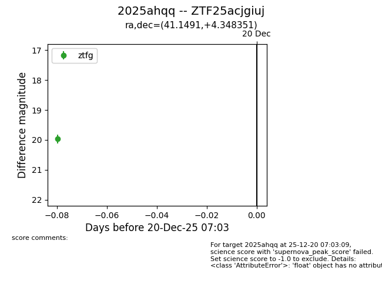
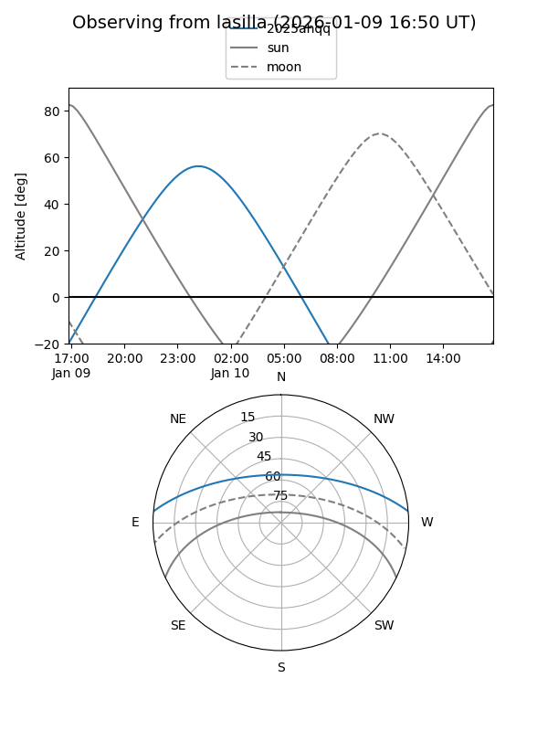
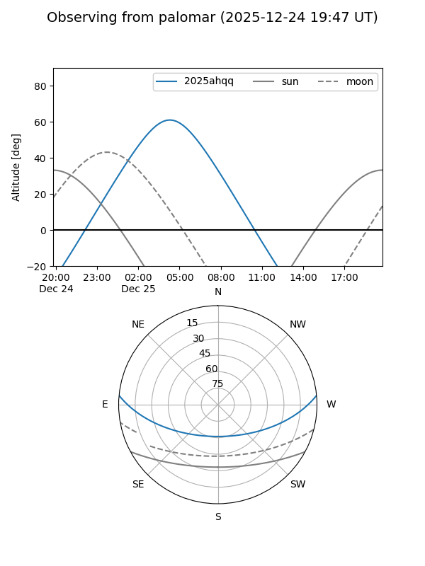

2025ahqq
Target 2025ahqq at 2025-12-31 17:00
Aliases and brokers:
FINK:
Lasair:
ALeRCE:
TNS:
YSE:
alt names
ZTF25acjgiuj (ztf,fink_ztf)
2025ahqq (tns,yse)
Coordinates:
equatorial (ra, dec) = 41.1491,+4.34835
equatorial (HMS+DMS) = 02:44:35.78,+04:20:54.06
galactic (l, b) = (168.2194,-48.31929)
Flags:
Photometry:
last ztfg=19.99
2 ztfg detections
Lightcurve

Visibility


Additional plots